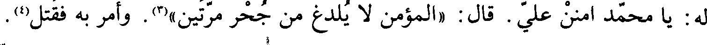
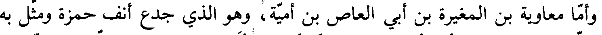
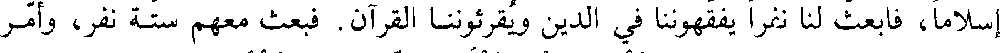

File: 000390.gt.txt (if the image is defective, simply delete all Arabic text and the line will be excluded)

له يا محمد أمنن علي قال (المؤمن لا يلدغ من جحر مرتين)(3) وأمر به وقتل(4
File: 000391.gt.txt (if the image is defective, simply delete all Arabic text and the line will be excluded)

وأما معاوية بن المغيرة بن أبي العاص بن أمية وهو الذي جدع أنف حمزة ومثل به
File: 000392.gt.txt (if the image is defective, simply delete all Arabic text and the line will be excluded)

مع من مثل به وكان قد أخطأ الطريق فلما أصبح أتى دار عثمان بن عفان فلما رآه
File: 000393.gt.txt (if the image is defective, simply delete all Arabic text and the line will be excluded)
قال له عثمان أهلكتني وأهلكت نفسك فقال أنت أقربهم مني رحما وقد جئتك
File: 000394.gt.txt (if the image is defective, simply delete all Arabic text and the line will be excluded)
لتجيرني وأدخله عثمان داره وقصد رسول الله صعلم ليشفع فيه فسمع رسول الله صلى الله عليه وآله وسلم
File: 000395.gt.txt (if the image is defective, simply delete all Arabic text and the line will be excluded)
صعلم يقول (إن معاوية بالمدينة فاطلبوه) فأخرجوه من منزل عثمان وانطلقوا به إلى
File: 000396.gt.txt (if the image is defective, simply delete all Arabic text and the line will be excluded)

النبي صعلم فقال عثمان والذي بعثك بالحق ما جئت إلا لأطلب له أمانا فهبه لي
File: 000397.gt.txt (if the image is defective, simply delete all Arabic text and the line will be excluded)
فوهبه له وأجله ثلاثة أيام وأقسم لئن أقام بعدها ليقتلنه فجهزه عثمان وقال له
File: 000398.gt.txt (if the image is defective, simply delete all Arabic text and the line will be excluded)

ارتحل(5
File: 000399.gt.txt (if the image is defective, simply delete all Arabic text and the line will be excluded)
وسار رسول الله صعلم إلى حمراء الأسد وأقام معاوية ليعرف أخبار النبي صعلم
File: 000400.gt.txt (if the image is defective, simply delete all Arabic text and the line will be excluded)
فلما كان اليوم الرابع قال النبي صعلم إن معاوية أصبح قريبا ولم يبعد فاطلبوه فطلبه
File: 000401.gt.txt (if the image is defective, simply delete all Arabic text and the line will be excluded)
زيد بن حارثة وعمار فأدركاه بالحماة فقتلاه(6
File: 000402.gt.txt (if the image is defective, simply delete all Arabic text and the line will be excluded)

وهذا معاوية جد عبد الملك بن مروان بن الحكم لأمه
File: 000403.gt.txt (if the image is defective, simply delete all Arabic text and the line will be excluded)

وفيها قيل ولد الحسن بن علي في النصف من شهر رمضان(7
File: 000404.gt.txt (if the image is defective, simply delete all Arabic text and the line will be excluded)
ودخلت السنة الرابعة من الهجرة
File: 000405.gt.txt (if the image is defective, simply delete all Arabic text and the line will be excluded)

ذكر غزوة الرجيع(1
File: 000406.gt.txt (if the image is defective, simply delete all Arabic text and the line will be excluded)

في هذه السنة في صفر كانت غزوة الرجيع
File: 000407.gt.txt (if the image is defective, simply delete all Arabic text and the line will be excluded)
وكان سببها أن رهطا من عضل والقارة قدموا على النبي صعلم فقالوا إن فينا
File: 000408.gt.txt (if the image is defective, simply delete all Arabic text and the line will be excluded)

إسلاما فابعث لنا نفرا يفقهوننا في الدين ويقرؤننا القرآن فبعث معهم ستة نفر وأمر
File: 000409.gt.txt (if the image is defective, simply delete all Arabic text and the line will be excluded)

عليهم عاصم بن ثابت وقيل مرثد بن أبي مرثد فلما كانوا بالهدأة غدروا واستصرخوا
File: 000410.gt.txt (if the image is defective, simply delete all Arabic text and the line will be excluded)

عليهم حيا من هذيل يقال لهم بنو لحيان(2) فبعثوا لهم مائة رجل فالتجأ المسلمون إلى
File: 000411.gt.txt (if the image is defective, simply delete all Arabic text and the line will be excluded)
جبل فاستنزلوهم وأعطوهم العهد(3) فقال عاصم والله لا انزل على عهد كافر اللهم
File: 000412.gt.txt (if the image is defective, simply delete all Arabic text and the line will be excluded)

خبر نبيك عنا وقاتلهم هو ومرثد وخالد بن البكير ونزل إليهم ابن الدثنة وخبيب
File: 000413.gt.txt (if the image is defective, simply delete all Arabic text and the line will be excluded)
بن عدي ورجل آخر فأوثقوهم فقال الرجل الثالث هذا أول الغدر والله لا اتبعكم
File: 000414.gt.txt (if the image is defective, simply delete all Arabic text and the line will be excluded)

فقتلوه وانطلقوا بخبيب وابن الدثنة فباعوهما بمكة فأخذ خبيبا بنو الحارث بن عامر بن
File: 000415.gt.txt (if the image is defective, simply delete all Arabic text and the line will be excluded)

نوفل وكان خبيب هو الذي قتل الحارث بأحد فأخذوه ليقتلوه بالحارث فبينما خبيب
File: 000416.gt.txt (if the image is defective, simply delete all Arabic text and the line will be excluded)
عند بنات الحارث استعار من بعضهن موسى يستحد(5) بها للقتل فدب صبي لها فجلس
File: 000417.gt.txt (if the image is defective, simply delete all Arabic text and the line will be excluded)

على فخذ حبيب والموسى في يده فصاحت المرأة فقال خبيب أتخشين أن اقتله إن
File: 000418.gt.txt (if the image is defective, simply delete all Arabic text and the line will be excluded)

الغدر ليس من شأننا فكانت المرأة تقول ما رأيت أسيرا خيرا من خبيب لقد رأيته وما
File: 000419.gt.txt (if the image is defective, simply delete all Arabic text and the line will be excluded)
بمكة ثمرة وإن في يده لقطف من عنب يأكله ما كان إلا رزقا رزقه الله خبيبا(1